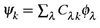

For a set of LMOs,
Σi<ψi4>
ΣiΣj<ψi2><ψi2>
ΣiΣj<i<ψi2><ψi2>
The operation to localize M.O. consists of a series of binary unitary
transforms of the type:
The ratio a/b is given by
From this it follows that, given
,
In order to preserve rotational invariance, all contributions on each atom must be
added together. This gives:
and
The value of 1/<ψ4> is a direct measure of the number of centers involved in the MO: thus, the value of 1/<ψ4> is 2.0 for H2, 3.0 for a three-center bond and 1.0 for a lone pair. There is no upper limit to the number of centers that can be in a localized M.O., although there are seldom more than 3 in any system. To understand this, consider a hypothetical system of 10 atoms that forms a perfect decagon, and each atom has only one atomic orbital, and the system has only one M. O. occupied. Okay, this is a ridiculous system, but it is being used for illustration only. The LMO and M.O., Ψ, would be the same:
Ψ = Σiciφi = Σi10-½φi
The value of <Ψ4> would be
<Ψ4> = Σijkl<ciφicjφjckφkclφl>
which, because of orthonormality of the atomic orbitals in semiempirical methods would simplify to<Ψ4> = Σikci2<φiφi>ck2<φkφk>
or
<Ψ4> = Σik10-1x10-1δ(i,k) = 0.1
So the LMO would involve 10.0 centers.
The RHF bond-order matrix, Pλσ, is constructed using the occupied set of M.O.s:
Pλσ, = 2Σi (occ) cλicσi
so the atomic orbital contribution of localized M.O. "j" to bonding, Bjj, of each LMO is given by:
Bjj = 2ΣλΣσcλjcσj2Σi (occ) cλicσi
Where λ and σ in the first two summations exclude all matrix elements involving the same atom. (Remember - bonds involve pairs of atoms.)
This summation can be re-cast in simpler form as:
Bjj = 2ΣλΣσcλjcσjPλσ
Note 1: The sum of the bonding contributions over all M.O.s (occupied plus virtual) is zero.
Note 2: A bonding M.O. will contribute ca. 2.0 to the bond-orders; a lone-pair will contribute ca. 0.0.